Vehicle Handling Characterization
My fourth-year engineering capstone at Carleton University. I instrumented Ravens Racing's FSAE car to measure tire loads and temperatures, and built the analysis to turn its data logs into numbers for handling balance, so setup decisions no longer rely on driver feel alone.
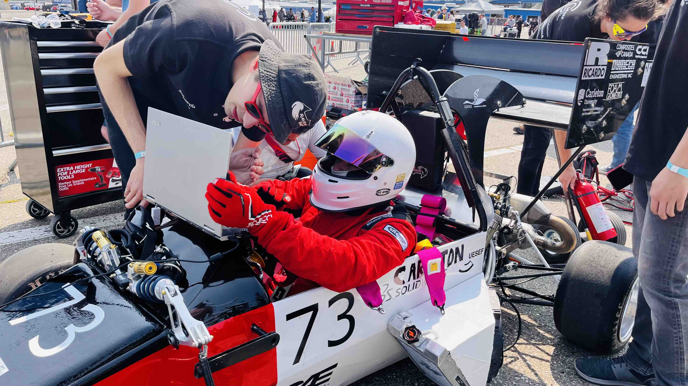
- Course
- MAAE4907D Capstone
- Team / Car
- Ravens Racing, RR25
- Year
- 2025 – 2026
- Spent
- $294 of $5,722 planned
The problem
Ravens Racing built its setups around driver feedback. Most FSAE drivers are amateurs, and they can't always say reliably what the car is doing. The car carries a MoTeC dash and ECU, but their data was rarely used to make setup or design decisions. In 2025 the team also switched tire compounds, from the LC0 to the R20, with almost no testing to show how it changed the car.
The goal: give the team quantitative measures of tire loads, tire temperatures and vehicle balance that can be checked at the track between runs.
Requirements
I set three objectives, each with measurable specs. These drove every design decision that followed.
Tire loads
- Logged at 60 Hz minimum
- Within ±25 N of actual load
- Range −50 N to 1300 N per tire
- Under $2,000, IP54
- Logs to the team's C185 dash or M150 ECU
Tire temperatures
- Logged at 10 Hz minimum
- Within ±2 °C
- Range 0 – 80 °C
- Under $1,500, IP54
- Logs to the team's C185 dash or M150 ECU
Vehicle handling
- Chassis slip within 2° of true slip
- Understeer / oversteer quantified through a lap
- Yaw moment quantified through a lap
- Viewable in MoTeC i2 on a team laptop
Concept selection
For tire loads I compared four concepts in a weighted trade study: strain gauges on the pushrods, an inline load cell, damper linear potentiometers and a wheel force transducer. Strain gauges scored highest (4.05). The load cell (3.85) and potentiometers (3.8) were close behind, and the wheel force transducer (2.55) was ruled out on cost and integration. I reran the study with different weights and inputs, and the result held each time. Because the scores were close, I kept the alternatives open, which mattered later in testing.
For temperature I used an infrared sensor reading the tire's surface, the same method Calspan uses for the FSAE Tire Test Consortium data, so the two would be directly comparable.
Tire temperature mount
The sensor has to stay pointed at the tire's tread as the wheel steers, so it mounts to the upright using the existing upper control arm bolts. That makes it unsprung mass, so it needed to be light: about 160 g in 6061 aluminium angle and flat bar, TIG-welded, with laser-cut base plates. I went through two 3D-printed iterations to stiffen it before the final version.

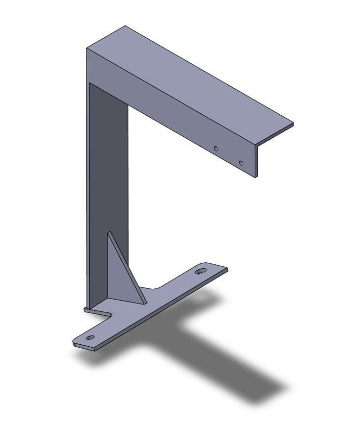

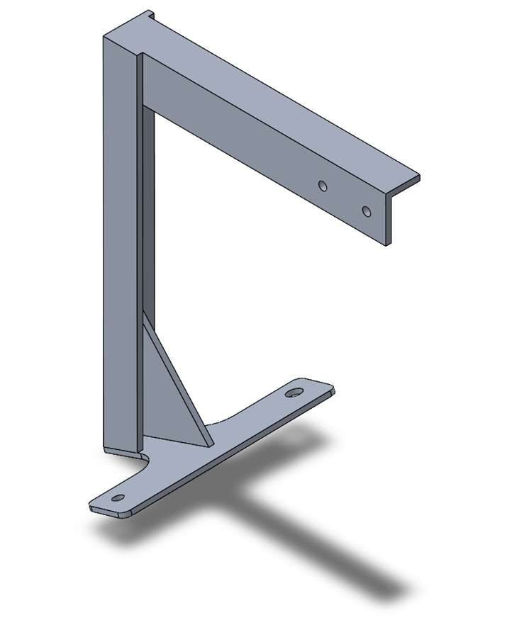

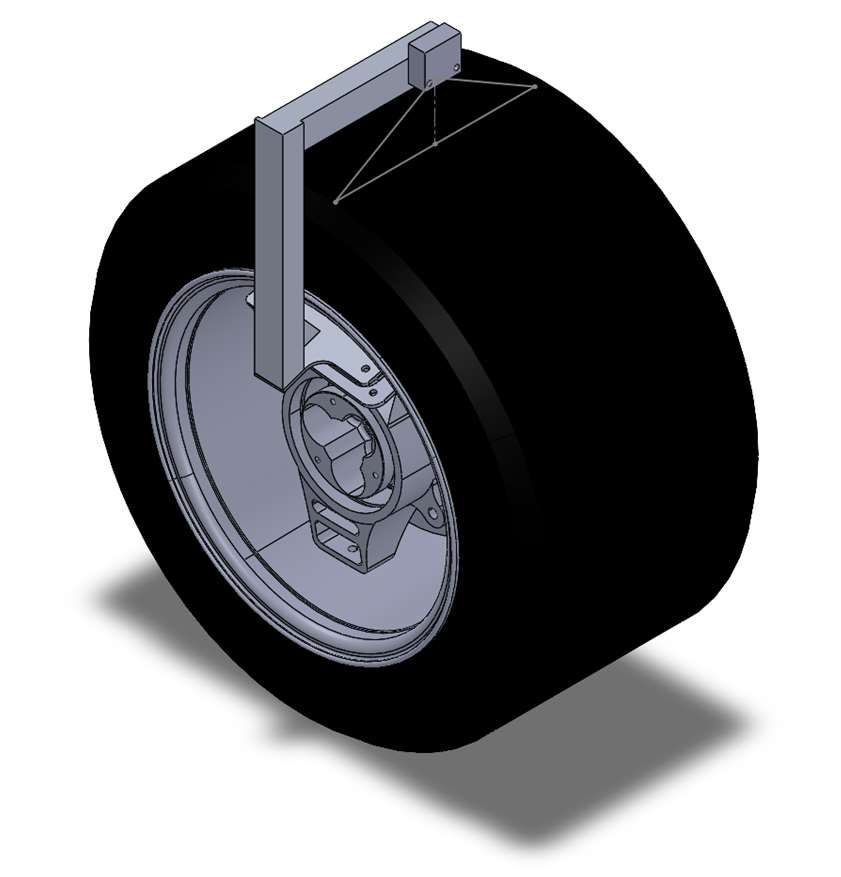
A bracket hanging off the wheel can't resonate with it, so I checked its natural frequency three ways: a Castigliano hand calculation, a SolidWorks deflection study and a SolidWorks modal analysis. On the simplified geometry, the hand calculation and the simulation agreed to within about 23%, which I then used as the error band. The full mount's lowest mode is 55.8 Hz, well clear of the wheel's natural frequency of about 21 Hz, and the wheel is overdamped at the team's usual damper settings.
| Method | Spring rate (N/m) | Natural frequency (Hz) |
|---|---|---|
| Simplified geometry, hand calc (Castigliano) | 584 | 27.2 |
| Simplified geometry, FEA deflection | 888 | 33.5 |
| Full geometry, FEA deflection | 16,332 | 143.8 |
| Full geometry, FEA modal (1st mode) | — | 55.8 |
| Wheel package (front and rear) | — | ≈ 21 |
Tire load measurement
Each pushrod got a half-bridge of 350 Ω strain gauges, one axial and one around the tube's circumference for temperature compensation, completed with precision resistors. They feed IZZE Racing amplifiers that put the readings on the car's CAN bus at 100 Hz. Pushrod force then converts to vertical tire load through the suspension geometry. I built the harness myself with crimped DTM connectors to match the team's wiring standard.

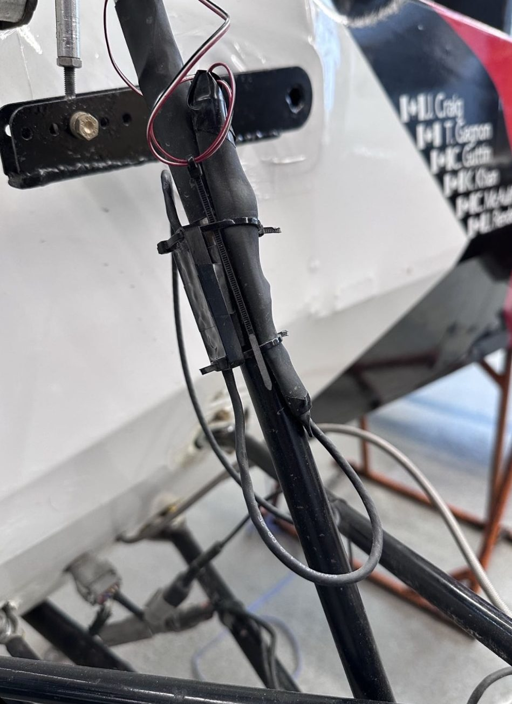

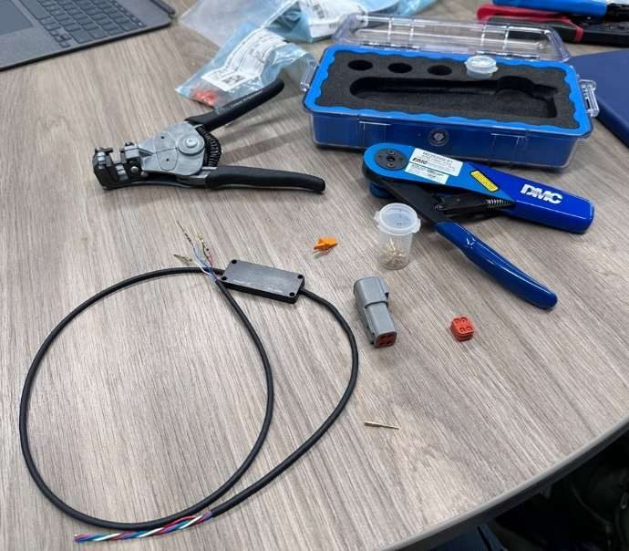

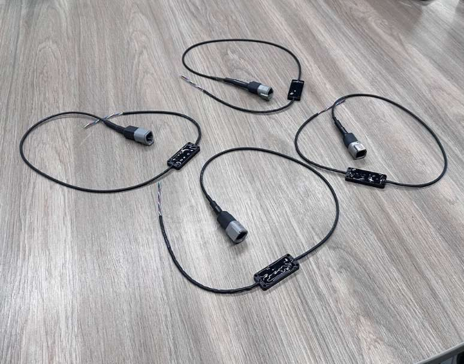
Testing & results
Tire loads: the strain gauges failed, the backup worked
I validated the loads on the team's corner-weight scales (±1 lb), adding weight to the chassis in steps. The strain gauges tracked for the first few trials, then fell further and further behind the scales. They also stuck: after a load was removed, they kept reading as if it were still there. I checked the wiring and it was correct, so the issue was the bonded gauges themselves.
I had logged the damper potentiometers during the same tests. Shock displacement had a clean linear relationship with tire load and was repeatable to about ±2 lb (≈ ±9 N), well inside the ±25 N spec, and it needs no extra hardware. The system also kept working after a session in the rain, which is a practical check of the IP54 requirement.
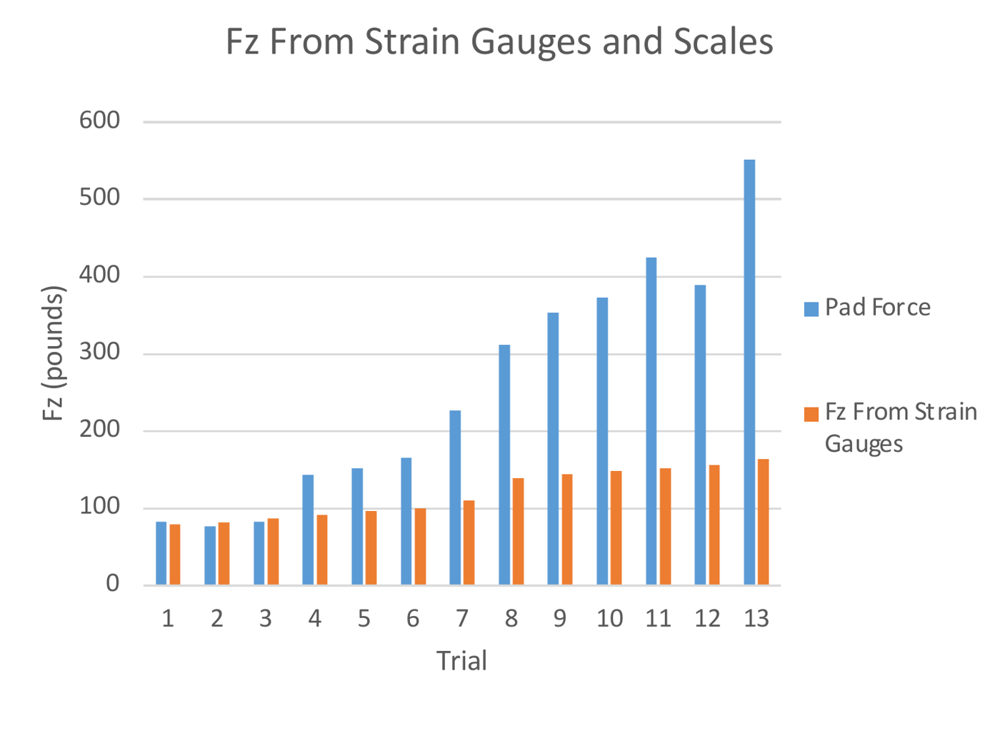
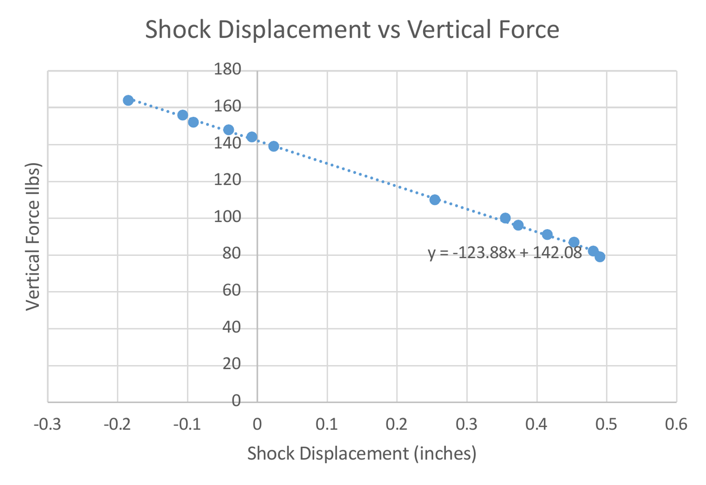
Tire temperatures
I heated the tire with a heat gun to cover the required range and compared the sensor with a FLIR C5 thermal camera (±3 °C) averaged over the same patch of tread. In all three trials the sensor was within about ±1 °C of the camera. It logs at 16 Hz, so it captures temperature changes during transients.
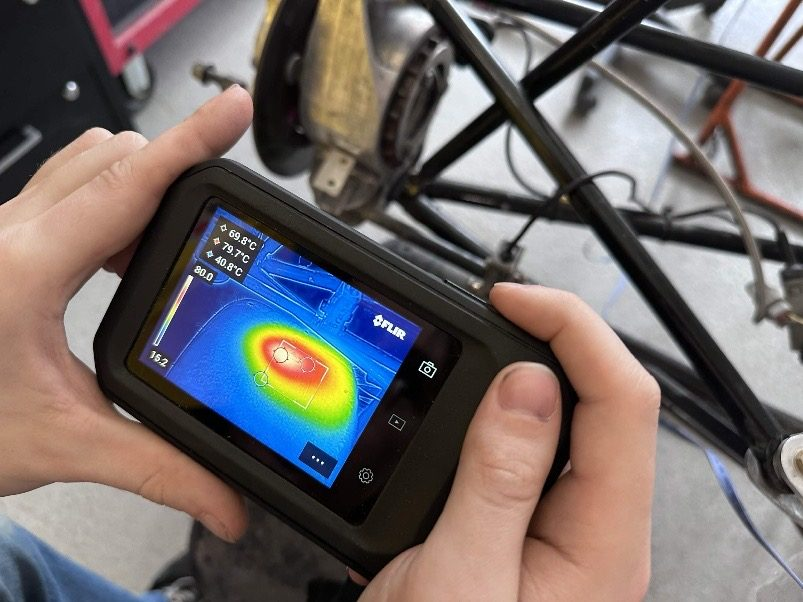
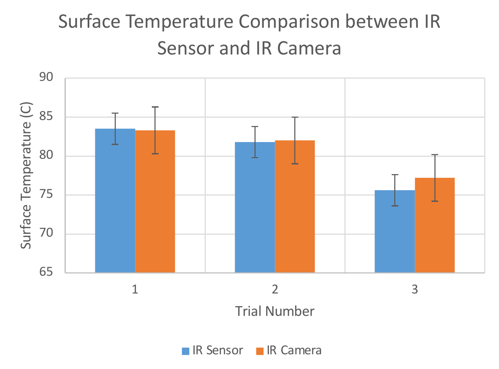
Vehicle handling
The handling side is all software: MoTeC i2 math channels for chassis side slip, tire slip angles, understeer coefficient and yaw moment, organised into a workspace for use at the track. The slip calculation was validated in Assetto Corsa to within about ±1° of the true value. The plots and what they showed are on the data analysis page.
Outcome
- All specs metEvery requirement across the three objectives passed, with tire loads coming from the damper potentiometers.
- $294 spent of $5,722 plannedReusing CAN sensors the team already owned and leftover tire sets cut the cost by about 95%.
- Test before you commitThe highest-scoring concept failed in validation. Logging the alternatives in the same tests meant the project still delivered.
- Built to be reusedThe workspace, mounts and harness stay on the car, so future members can use them with no setup.
What I'd do next
Replace the strain gauges with screw-in axial load cells. Putting them in the control arms and tie rods as well would give lateral force and aligning moment from the link force vectors, which vertical load alone can't. A dedicated slip angle sensor (accurate to 0.1–0.25°) would allow a proper comparison with the Calspan tire data, and could be bought as shared lab equipment for other teams and capstones. The team also needs to measure the car's yaw moment of inertia, for example on a bifilar or trifilar pendulum, so yaw moment can be calculated from real track data.
The tire model this work set out to validate was developed by J. Thibault from FSAE TTC data in 2024–25.